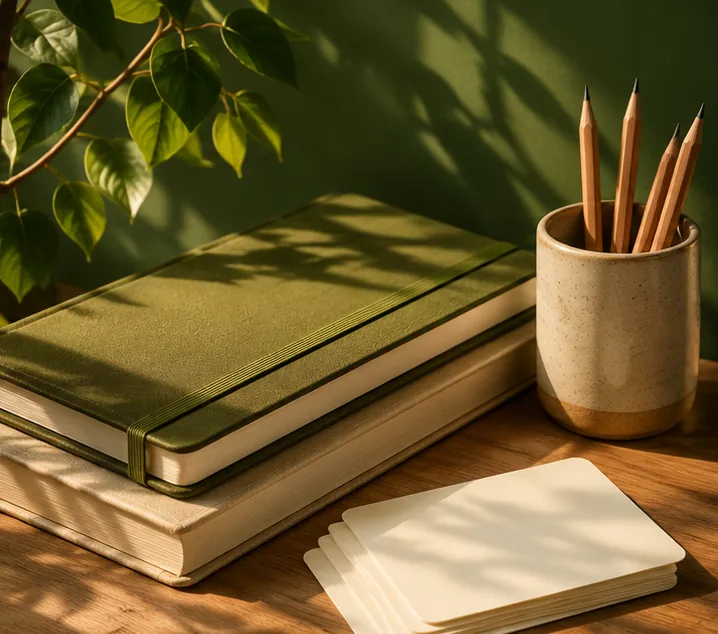

فيديو تعليمي
فيديو تعليمي
استوديو صناعة الفيديو بالذكاء الاصطناعي
من الفكرة
من الفكرة
إلى الفيديو.
تعلّم كتابة السيناريو وتخطيط المشاهد وتحرير الفيديو. ابدأ بمشروع يناسب جهازك وميزانيتك، وطبّق كل خطوة بنفسك.
تعلّم بالعربي واحتفظ بتقدمك على جهازك
عرض تفاعليWATER CYCLE / STUDIO
الفكرةماذا نريد أن يتعلم المشاهد؟
السيناريوبعد المطر… أين ذهب الماء؟
المشاهدمن سطح الماء إلى السحب
الصوتالتعليق يربط اللقطات بالفكرة
الفيديواجمع اللقطات والصوت وراجع النتيجة
وش ودّك تصنع؟
اختر نوع الفيديو وسيقترح الاستوديو خطة تبدأ بها.
طبّق على مشروع حقيقي
افتح دليل الإنتاج وشاهد كيف تتحول الفكرة إلى نص ولوحة مشاهد وخطوات مونتاج.
فيديو تعليمي

فيديو إعلانيثلاث خطوات لفيديوك الأول
1. اختر مسارك
حدّد نوع الفيديو وخبرتك والجهاز والميزانية.
2. جهّز اللقطات
اكتب نصك وحدد الصورة والصوت لكل لقطة.
3. حرّر وصدّر
اجمع اللقطات وافحص الفيديو على الهاتف.
دون شراء أرصدة
استخدم صورك وصوتك وحرّك الصور داخل محرر فيديو.
بأرصدة تجريبية
جرّب توليد لقطة واحدة وراجع قيودها قبل تركيبها في المشروع.
ابدأ بمشروع دورة الماء
في الدرس الأول ستحدد هدف فيديو وتصدر عينة قصيرة.